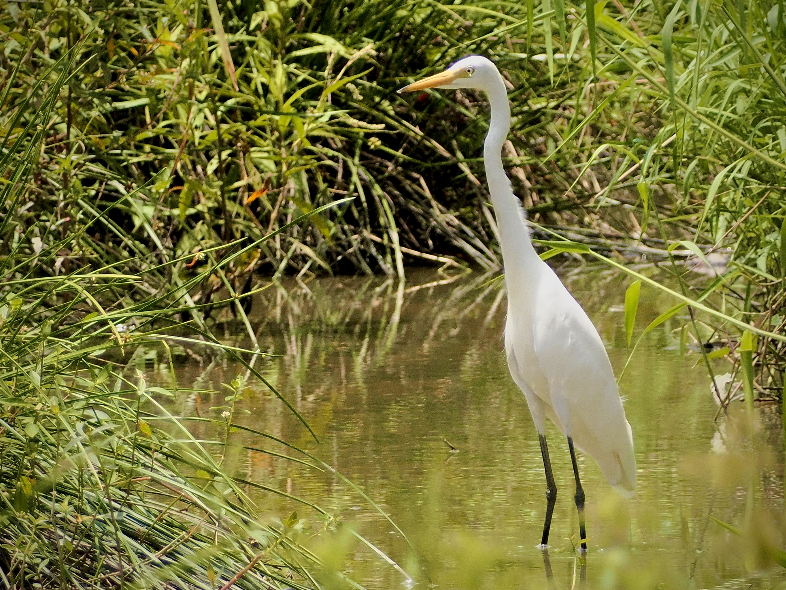

Medium Egret
Ardea intermedia
Other names: Intermediate Egret
Order: Pelecaniformes
Family: Ardeidae

A white egret. Size is between Little and Great Egrets. Bill is yellow with a slight black tip, while legs are black. Rather uncommon, and frankly requires some effort to ID.